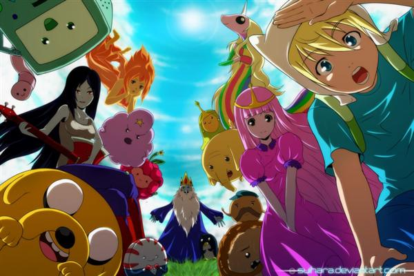

|
por: Lucas Caetano
(Lukas tenner)
Hora de aventura

Adventure Time (Hora de Aventura (título no Brasil) ou Hora de Aventuras (título em Portugal)) é uma série de desenho animado americana desenvolvida por Pendleton Ward para o Cartoon Network. A série segue as aventuras de Finn (dublado por Jeremy Shada), um garoto humano aventureiro, e o seu melhor amigo e irmão adotivo Jake (dublado por John DiMaggio), um cão com poderes de origem mutante que lhe permitem alterar a forma e tamanho consoante a sua vontade. Finn e Jake habitam a pós-apocalíptica Terra de Ooo, onde interagem com os outros personagens principais da série: Princesa Jujuba (dublada por Hynden Walch), o Rei Gelado (dublado por Tom Kenny) e Marceline, a Rainha dos Vampiros (dublada por Olivia Olson).